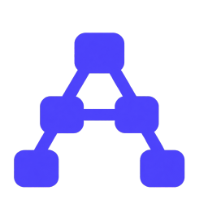

Моделировать систему
Переходите от контекста системы к контейнерам и компонентам по модели C4. На холсте есть готовые элементы для сервисов, хранилищ, очередей, топиков, наблюдаемости и безопасности.

Проектируйте архитектуру ПО: связывайте схемы, описывайте сценарии и фиксируйте решения в одном проекте. Без регистрации.
На обзорной схеме нужны границы системы, а на детальной — отдельные сервисы и их связи. В ArkiBoard один компонент может появляться на разных схемах: расположение карточек меняется независимо, а свойства компонента остаются общими.
К той же модели можно привязать требования, сценарии и записи об архитектурных решениях (ADR). На ревью видно не только из чего состоит система, но и какие компромиссы стояли за её устройством.
Переходите от контекста системы к контейнерам и компонентам по модели C4. На холсте есть готовые элементы для сервисов, хранилищ, очередей, топиков, наблюдаемости и безопасности.
Сохраняйте группы вместе с настройками, пояснениями и внутренними связями в личную библиотеку. Для начала есть примеры Transactional Outbox и Inbox.
Задавайте последовательные и параллельные шаги, условия и компенсации. Поток можно проиграть на схеме или показать диаграммой последовательности.
Связывайте требования и их критерии с компонентами и ADR. Фиксируйте альтернативы, допущения, риски и причины выбора.
Сравнивайте базовый сценарий и десятикратный рост. Оценки трафика, хранения, очередей и задержек строятся на ваших исходных данных и допущениях.
Находите потенциальные единые точки отказа, циклы и длинные цепочки синхронных вызовов. Замечания помогают начать ревью, но не заменяют тесты.
Переносите схемы из draw.io, PlantUML/C4 и Mermaid. Перед импортом можно проверить распознанные типы элементов и связи.
Сохраняйте схемы в SVG, PNG и PDF, выгружайте документацию в Markdown с диаграммами Mermaid или делитесь автономным HTML-отчётом с проигрывателем сценариев.
Автосохранение работает в текущем браузере, без серверной синхронизации. Для резервной копии и переноса полной редактируемой модели используйте файл .archd.
Создайте пустой проект или откройте готовый пример Outbox или Inbox.